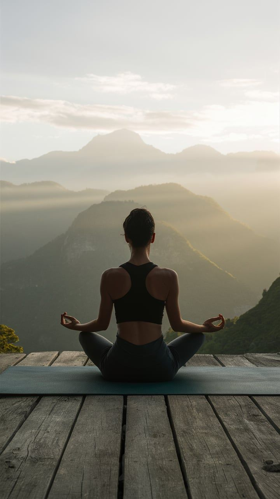
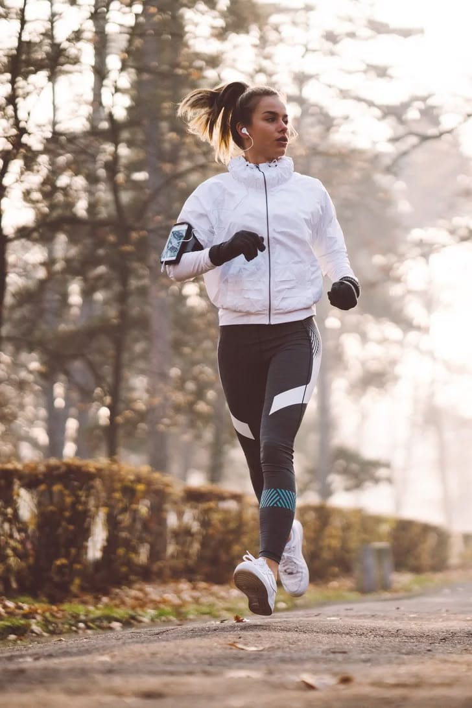

Exercise Suggestions for Your Period
Gentle movement can help ease cramps, boost your mood, and keep you feeling your best.
-
Gentle Yoga for Cramps
Try gentle yoga poses like Child’s Pose, Cat-Cow, and Reclined Twist. These help relax your lower back and abdomen, easing menstrual cramps and tension.
-
Walking for Mood Boost
A brisk walk outdoors can lift your mood, increase energy, and reduce stress. Even a short walk in nature or around your neighborhood can make a difference.
-
Low Impact Workouts
Try swimming, cycling, or Pilates. These low impact exercises are gentle on your joints and help keep your body active without overexertion.